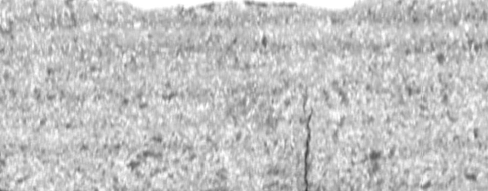
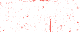
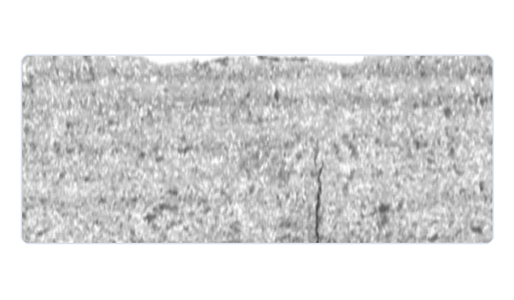

01
Build the reference
정상 사진의 특징을 미리 모아 새 사진과 비교할 기준을 만듭니다.
METAL SURFACE DEMO
Compare a real metal surface photo with the normal reference. See where it differs.


NEW · LABELING WORKSPACE
AI가 제안한 영역을 다듬고, 라벨을 확정하세요.
검수 결과는 일일 품질 보고서로 이어집니다.
REAL PHOTOS
HOW IT WORKS
AI가 만든 초안을 사람이 수정·확정하고,
검수 결과를 보고서와 데이터로 이어갑니다.
정상 사진의 특징을 미리 모아 새 사진과 비교할 기준을 만듭니다.

사진 크기를 맞추고, 흑백 변환과 밝기 정규화를 수행합니다.

사진을 작은 패치로 나눠 표면의 각 부분을 살펴봅니다.

각 패치의 밝기·어두운 틈·경계 특징을 수치로 표현합니다.

가장 비슷한 정상 패치와 비교해 차이를 점수로 계산합니다.

차이가 큰 위치를 히트맵으로 표시해 먼저 검토할 곳을 안내합니다.
점수가 높은 인접 영역을 박스 초안으로 만듭니다. 검수자는 이 초안에서 작업을 시작합니다.
검수자가 박스를 수정·추가하고 결함 유형을 확정합니다. AI의 오탐과 누락을 사람이 보완합니다.
확정 라벨을 일일 보고서로 집계하고, 다음 학습에 쓸 데이터로 내보냅니다.
HELD-OUT TEST
제품 그룹을 분리한 시험 이미지 64장
이상 점수는 정상 기준과의 차이입니다. 사람이 초안을 확인하고 수정한 뒤, 확정 라벨을 보고서와 데이터로 활용합니다.
Try the labeling workflow